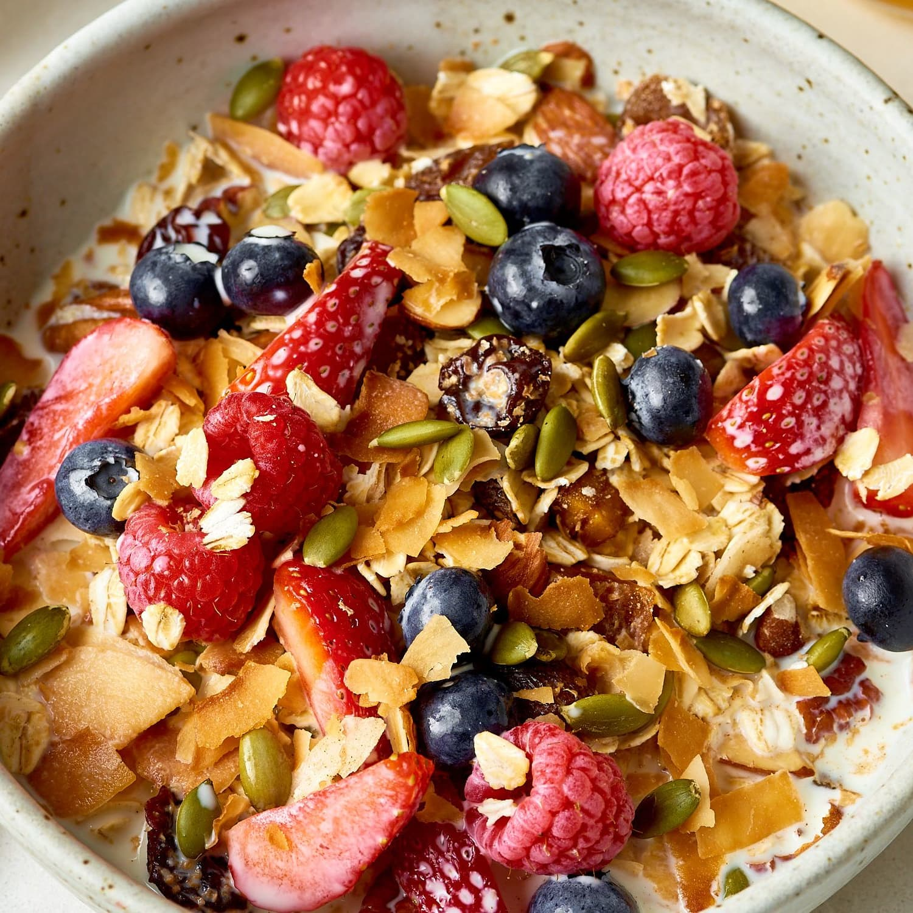

Muesli
Description

Yes, I know, not the most entertaining thing, but
muesli really allows you to get in some really
nutritious stuff - fruit, nuts, wholegrains, seeds,
the whole shebang.
Be sure to make this the night before you have
breakfast, so that the frozen berries
can thaw overnight
Ingredients
- 45g Muesli mix (I know, we're cheating)
- kiwi fruit
- 15g chia seeds
- 80g frozen berries
- 30g protein powder
- 5g creatine monohydrate powder
- 150ml non-dairy milk
Steps
- Add in the chia seeds, creatine and protein
powder first - sometimes the scales are a bit
off if you add them later.
- Add in muesli mix and frozen berries.
- Chop up the kiwi fruit, and add it in.
- Add the milk and stir until the
powder has dissolved evenly throughout the
mixture.
- Leave in fridge overnight, allowing the frozen
berries to thaw.